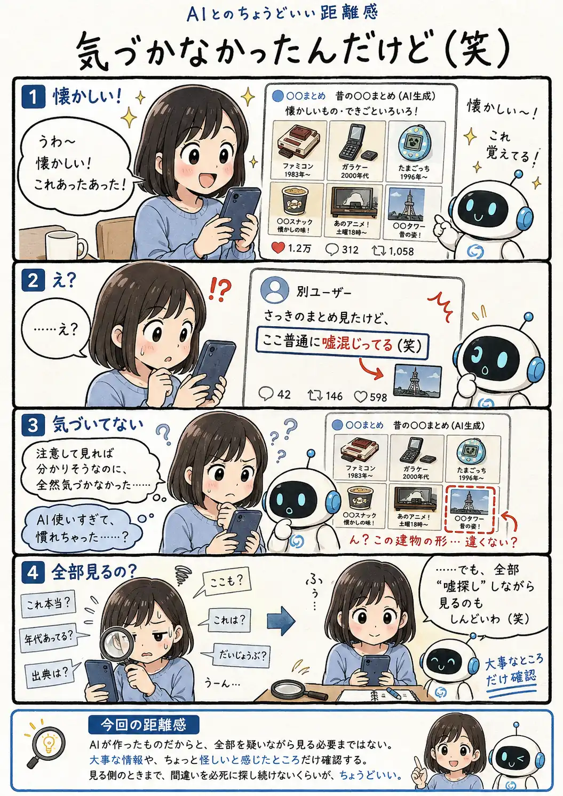

#111
気づかなかったんだけど（笑）
え、そこ普通に信じて見てた……。

メモ
AIが間違うことを知っていても、見ている情報の大部分が自然だったり、自分の記憶や感情と合っていたりすると、小さな違和感を見落とすことはあります。それだけで「自分はAIに慣れすぎた」と決めつけなくてもよさそうです。
もちろん、仕事や健康、お金など判断に影響する情報なら確認は大切です。でも、普段見るものまで全部を間違い探しのように読むのは疲れます。確認する強さを、情報の重要さに合わせて変えるのも一つの付き合い方です。
今回の距離感
AIが作ったものだからと、全部を疑いながら見る必要まではない。大事な情報や、ちょっと怪しいと感じたところだけ確認する。見る側のときまで、間違いを必死に探し続けないくらいが、ちょうどいい。